MyFox
MyFox — набор твиков интерфейса Firefox и утилита для их установки и обновления.
MyFox is a set of Firefox interface tweaks and a utility for installing and updating them.
Что сегодня представляет собой Firefox?What is Firefox like today?
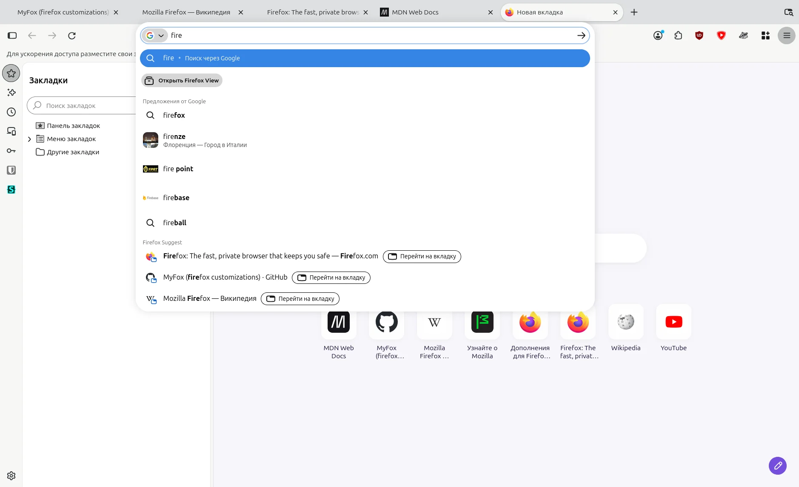
Вкладки-пилюли. Громоздкие элементы интерфейса. Навязчивые функции, о которых никто не просил.Pill tabs. Bulky interface elements. Pushy features nobody asked for.
Всё это можно исправить.All of this can be fixed.
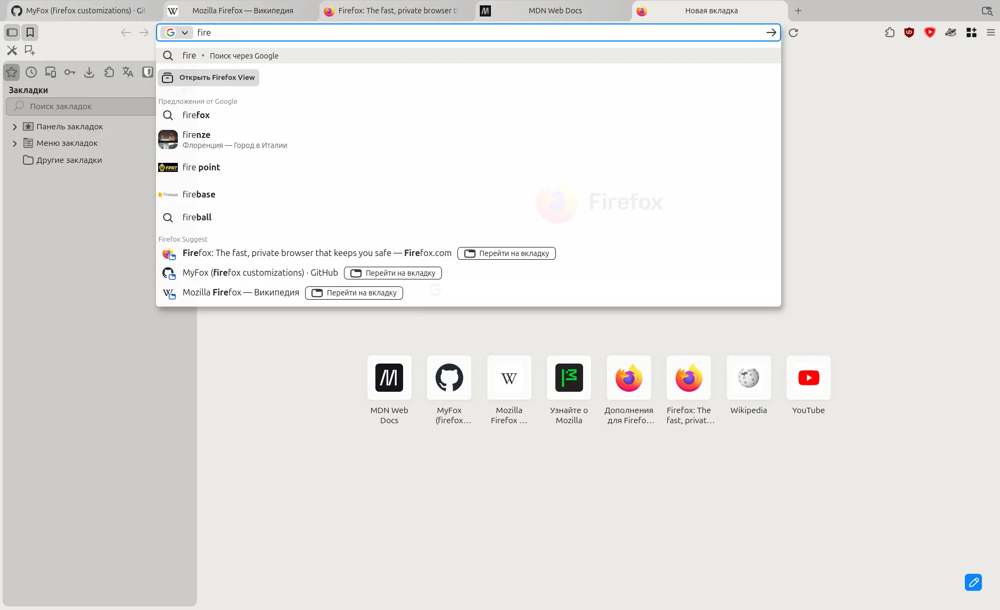
Установив MyFox.By installing MyFox.
MyFox кардинально меняет интерфейс FirefoxMyFox changes the Firefox interface from the ground up
Списки загрузок и установленных расширений, а также встроенный переводчик теперь можно открыть и в боковой панелиThe lists of downloads and installed extensions, as well as the built-in translator, can now be opened in the sidebar too
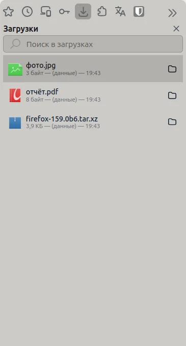
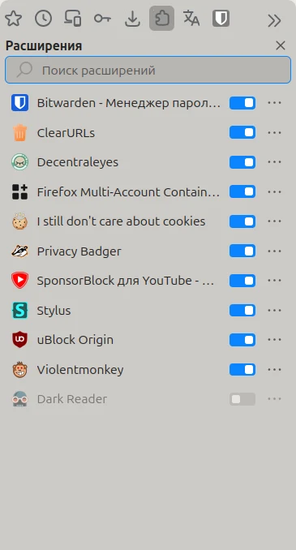
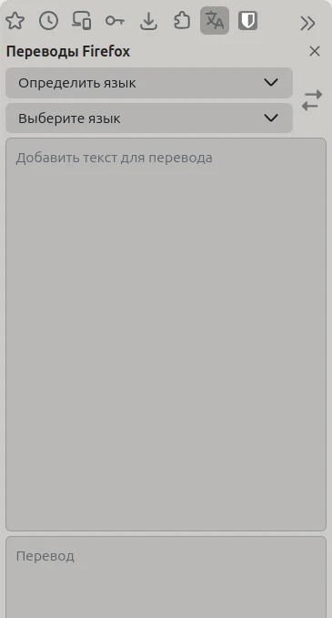
Кнопки инструментов можно разместить над боковой панельюThe tool buttons can be placed above the sidebar
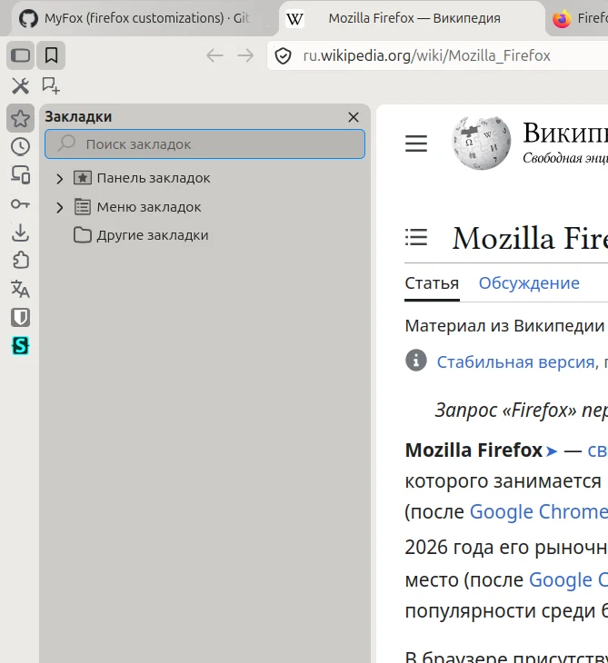
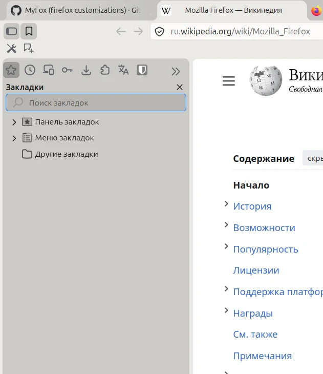
Вкладки снова похожи на вкладки, а не на «пилюли»Tabs look like tabs again, not “pills”
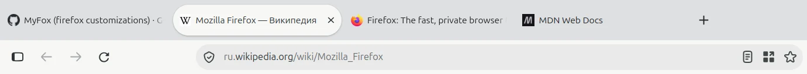
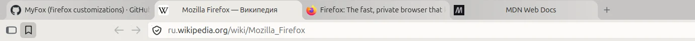
Вертикальные вкладки переработаны в том же стилеVertical tabs are reworked in the same style
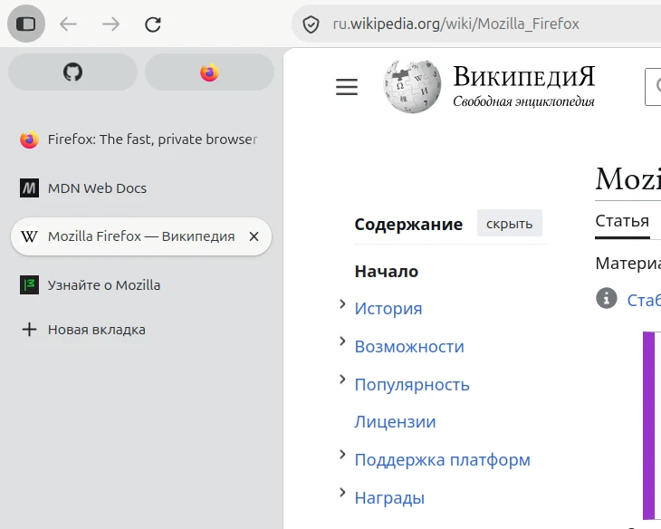
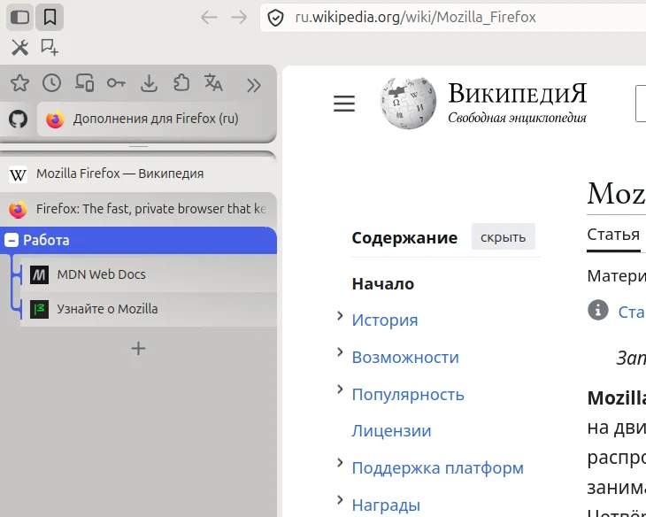
Меню стали компактнееMenus became more compact
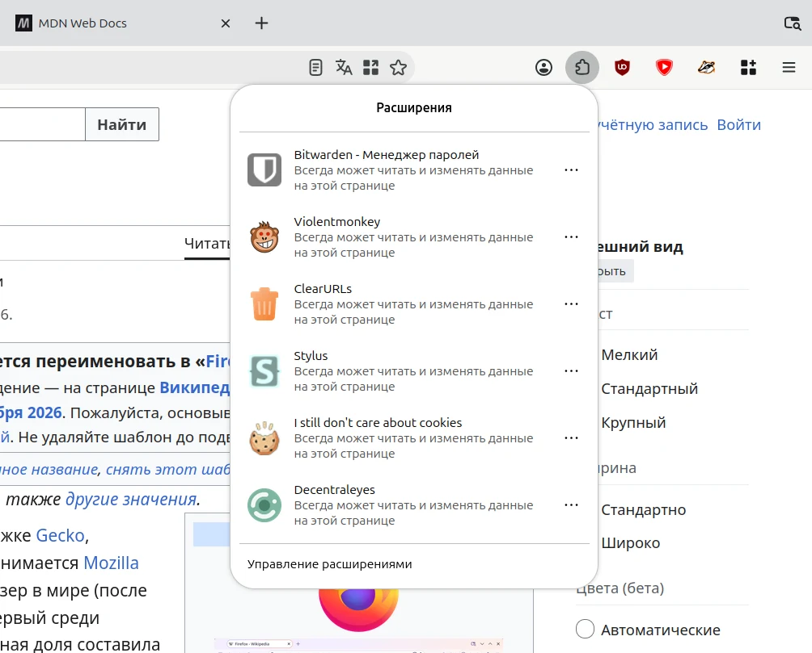
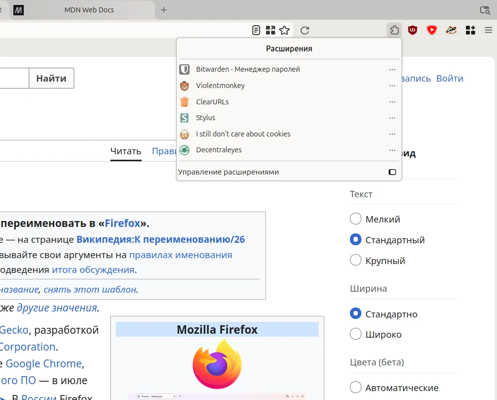
Также переработаны менеджер паролей, адресная строка, кнопки, поля и переключатели, страницы настроек Firefox, окна «Библиотека» и «Сведения о странице» и ещё много чего. ИИ-функции и телеметрия выключены по умолчанию. По умолчанию включён DNS через HTTPS. Твики настраиваются на странице about:myfox.
Also reworked: the password manager, the address bar, buttons, fields and toggles, the Firefox settings pages, the Library and Page Info windows, and much more. AI features and telemetry are off by default. DNS over HTTPS is on by default. The tweaks are configured on the about:myfox page.
Подробнее в вики MyFox tweaks More in the MyFox tweaks wikiУстановкаInstall
Выполните команду в терминале.Run the command in a terminal.
$ curl -sL myfox.in | sh
Установка происходит без взаимодействия с пользователем. Параметры установки по умолчанию, а также флаги для их изменения можно посмотреть в документации MyFox.
The install runs without user interaction. The default install options and the flags to change them are listed in the MyFox documentation.
MyFox устанавливает Firefox с новым профилем в домашнюю папку пользователя. Права администратора не нужны. Уже установленный в системе Firefox и его профили не затрагиваются.
MyFox installs Firefox with a new profile into the user’s home folder. No admin rights needed. A Firefox already installed on the system and its profiles are not affected.
В MyFox можно скопировать или перенести профиль уже установленного Firefox со всеми закладками, паролями, историей, расширениями и аккаунтом Firefox. Это делается при установке, а позже — командой myfox или на странице about:myfox.
The profile of a Firefox already installed can be copied or moved into MyFox, with all its bookmarks, passwords, history, extensions and Firefox account. This is done during the install, and later with the myfox command or on the about:myfox page.
В меню ярлыка Firefox, кроме стандартных пунктов, есть настройки, перезапуск Firefox и обновление MyFox. Для управления MyFox используется команда myfox.
Besides the standard items, the Firefox shortcut menu has settings, a Firefox restart and a MyFox update. MyFox is managed with the myfox command.
Firefox обновляется сам. Твики, темы и MyFox обновляются командой myfox refresh, из меню ярлыка или из раздела обновлений на странице about:myfox.
Firefox updates itself. The tweaks, the themes and MyFox update with myfox refresh, from the shortcut’s menu or from the updates section of the about:myfox page.
КомандыCommands
| myfox refresh | обновить твики, темы и MyFoxupdate the tweaks, the themes and MyFox |
| myfox reinstall | переустановить Firefoxreinstall Firefox |
| myfox uninstall | удалить MyFoxuninstall MyFox |
| myfox help | список всех командlist all commands |
УдалениеUninstalling
По умолчанию при удалении MyFox профиль браузера сохраняется. Это поведение можно изменить, задав параметры в диалоге удаления или через флаги командной строки.
By default, uninstalling MyFox keeps the browser profile. You can change this with the uninstall options, in the dialog or with command-line flags.
Параметры установки и удаления описаны в документации MyFox.
The install and uninstall options are described in the MyFox documentation.
Firefox уже установлен?Firefox already installed?
MyFox tweaks можно также установить и поверх уже установленного Firefox. Инструкция по ручной установке — в README MyFox tweaks.
MyFox tweaks can also be installed on top of a Firefox that is already installed. Manual install instructions are in the MyFox tweaks README.